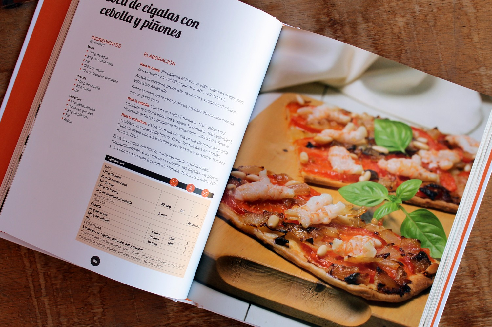
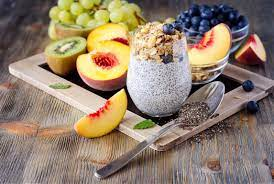
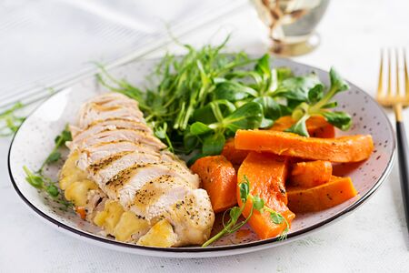
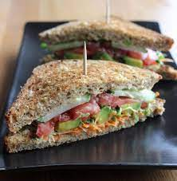

Esta pagina web te va ayudar a aprender a cosinar con ayuda de recetas muy practicasy faciles te proporcionara un tipo de ayuda para que aprendas hacer unos alimentos ricos y nutritivos para tu salud sin que batalles o te estreses para que puedas aprender a cosinar ya que incluirian pasos a seguir y entre otros procedimientos
RECETAS FACILES
APRENDE FACIL
recetas

comida saludable

platos fuertes

preparaciones de 10 minutos

postres
RECETA
- nuestras recetas son muy practicas y sencillas para cosinar algo rico y saludable
COMIDA SALUDABLE
- es con la intencion de cuidar nuestra salud basada en algun platillo bueno y que al mismo tiempo veneficie tu salud
PLATOS FUERTES
- a qui encontraremos algunos platillos con mayor practica para aprender a cosinar algo mas practico para que puedas a compañar con toda tu familia
PREPARACIONES DE 10 MINUTOS
- a qui encontraremos preparaciones de recetas practicas para cuando no tengas mucho tiempo de preparar algo tan elaborado pues en esta seccion puedes encontrar recetas en tansolo 10 minutos
POSTRES
- en esta pagina ademas de encontrar recetas de comidas faciles tambien se incluyen ricos postres que son muy practicos para que puedas elaborarlos